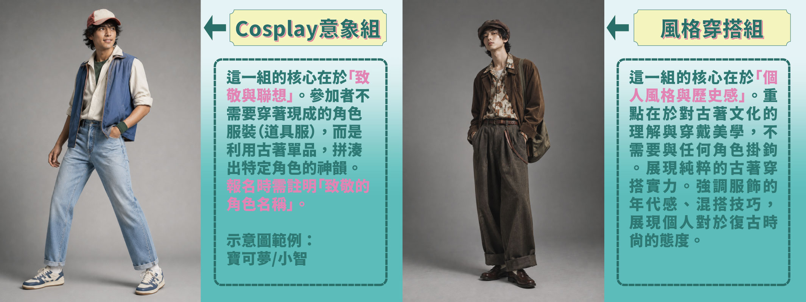

SILENT PARTY

 靜音派對
靜音派對
本次古着派對將邀請專業 DJ 團隊「動漫派 DMP」共同合作，以日式復古為主題， 打造全方位的音樂體驗。同時考量周邊住戶的居住安寧，本次派對將採用耳機形式進行—— 名額有限，有興趣的朋友請把握機會，點擊下方連結預約！
活動時間
2026.09.12 14:00–17:00
活動地點
心中山線形公園
（R9出口）
參加方式
- 活動官網事前預約（現場保留名額30分鐘）
- 現場報名
耳機數量
100台
🎧 兌換活動耳機需抵押個人證件，歸還耳機時退回。


COMPETITION
穿搭競賽
每一件古着，都承載著一段歲月；每一次穿搭，都是對經典的重新演繹。
我們即將舉辦一場專屬於古着愛好者的穿搭盛會，誠摯邀請您以布料為畫筆， 展現獨特的復古美學。本次競賽分為以下兩組：

Cosplay 意象組
這一組的核心在於「致敬與聯想」。參加者不需要穿著現成的角色服裝（道具服），而是利用古着單品，拼湊出特定角色的神韻。報名時需註明「致敬的角色名稱」。
風格穿搭組
這一組的核心在於「個人風格與歷史感」。重點在於對古着文化的理解與穿戴美學，不需要與任何角色掛鉤，展現純粹的古着穿搭實力。強調服飾的年代感、混搭技巧，展現個人對於復古時尚的態度。
無論是哪一種風格，只要展現出您對古着的深刻理解， 就有機會在最終的「人氣票選」中脫穎而出，奪得優勝。 邀請熱愛古着與穿搭的您，一同參與這場跨越時空的時尚交會。 報名熱烈進行中，期待您的加入。
活動日期
2026.09.12
活動時間
14:00–17:00
活動地點
心中山線形公園（R9出口）
報名方式
- 2026/8/20開放線上報名至2026/9/10，完成線上報名可獲100元早鳥古着券
- 現場報名
評選方式
- 活動現場人氣票選
- 投票資格：活動現場完成拍照打卡/限動發佈，即可獲得投票貼紙乙張集古着券1張
獎項說明｜兩組各10名，共20名
- 1名：古着券 $5,000
- 2名：古着券 $3,000
- 3名：古着券 $2,000
- 4–6名：古着券 $1,000
- 7–10名：古着券 $500